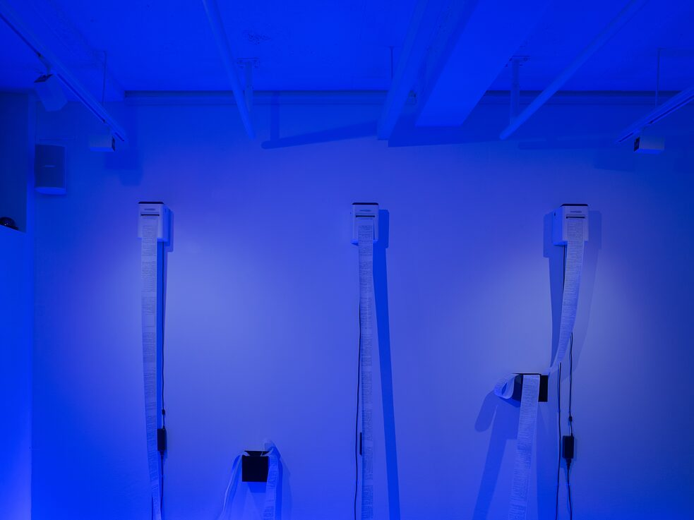
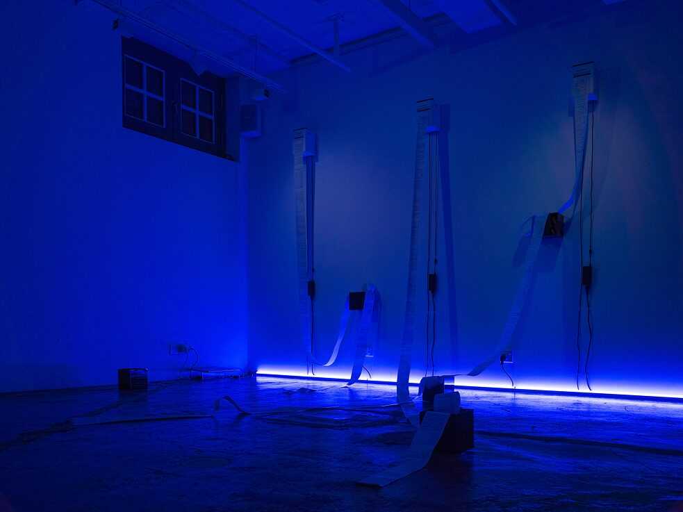

-
- ../2022/how long is a piece of string
- installation
Tracing Latencies 2022, Goethe Institut
- how long is a piece of string? reflects upon the omnipresent but overlooked collection of personal/photographic data and questions the ethics of data collection, retention and destruction. In the digital age, where the exchange of personal information for social networks is normalized, there is a need to ponder upon the trails of data left behind, as well as the ethical and legal accountabilities of corporate and governmental institutions.
This durational, two-part installation presents photographic data collected by “A” over a period of 30 days from a study on self-surveillance. The data is created by converting image files into textual data, which are printed onto paper at regular intervals.The accumulated data then flows into various black boxes, representing the covered and uncontrollable flows of personal data.
An accompanying performance video of the data being destroyed presented alongside a shredder expresses our hopes for our increasingly digitized urban environments - the ownership and transparency of our data.
On the last day of the exhibition, visitors will be invited back to destroy the data themselves, thus deactivating the work physically.
Goethe's website

